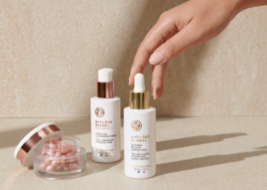
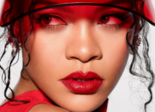
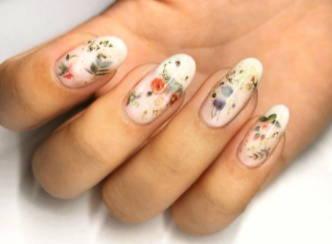
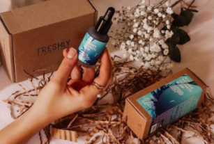
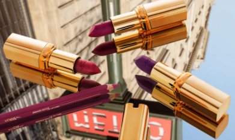
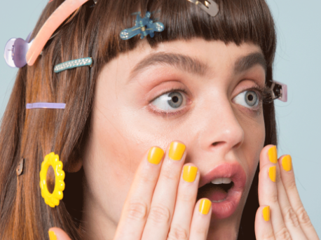
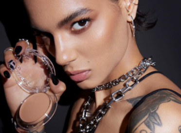

NOTICIAS DE HOY


NO TE PUEDES PERDER


TENDENCIAS MANICURA PRIMAVERA-VERANO


TENDENCIAS OJOS PRIMAVERA-VERANO


CONSEJOS PARA EL CUIDADO DE LA PIEL


ÚLTIMOS VÍDEOS
ÚLTIMAS NOTICIAS

 ROSTRO
ROSTRO
Los polvos de maquillaje de larga duración más vendidos en Amazon (que han arrasado en TikTok)



ROSTRO
Lo nuevo de Yves Rocher para tratar las manchas y dar luminosidad a la piel es una pasada y ya está de rebajas
Lo nuevo de Yves Rocher para tratar las manchas y dar luminosidad a la piel es una pasada y ya está de rebajas

LABIOS
Rihanna nos ha conquistado con sus nuevos labiales rojos y nude que son el complemento perfecto de todo maquillaje
Rihanna nos ha conquistado con sus nuevos labiales rojos y nude que son el complemento perfecto de todo maquillaje

MANICURA
Las uñas encapsuladas son la mejor opción para quienes buscan una manicura preciosa e impactante por partes iguales
Las uñas encapsuladas son la mejor opción para quienes buscan una manicura preciosa e impactante por partes iguales
 OJOS
OJOS
Probamos las nuevas sombras mates de Charlotte Tilbury y su fijación es tan buena que el maquillaje dura perfecto todo el día

ROSTRO
Por qué triunfa tanto el Blue Radiance Enzymatic Serum de Freshly Cosmetics (además por tener un buen descuento)
Por qué triunfa tanto el Blue Radiance Enzymatic Serum de Freshly Cosmetics (además por tener un buen descuento)

LABIOS
Barras de labios que levantan el ánimo: sabemos cuál es el tono perfecto para cada ocasión
Barras de labios que levantan el ánimo: sabemos cuál es el tono perfecto para cada ocasión

ROSTRO
De por qué las bases de maquillaje en polvo son la nueva obsesión para un efecto segunda piel
De por qué las bases de maquillaje en polvo son la nueva obsesión para un efecto segunda piel

MANICURA
Este es el producto de belleza que necesitas aún más que el bálsamo de labios en invierno
Este es el producto de belleza que necesitas aún más que el bálsamo de labios en invierno

OJOS
Siete productos de maquillaje revolucionarios de KVD Beauty (la antigua marca de Kat Von D): desde la base Good Apple al delineador de ojos
Siete productos de maquillaje revolucionarios de KVD Beauty (la antigua marca de Kat Von D): desde la base Good Apple al delineador de ojos